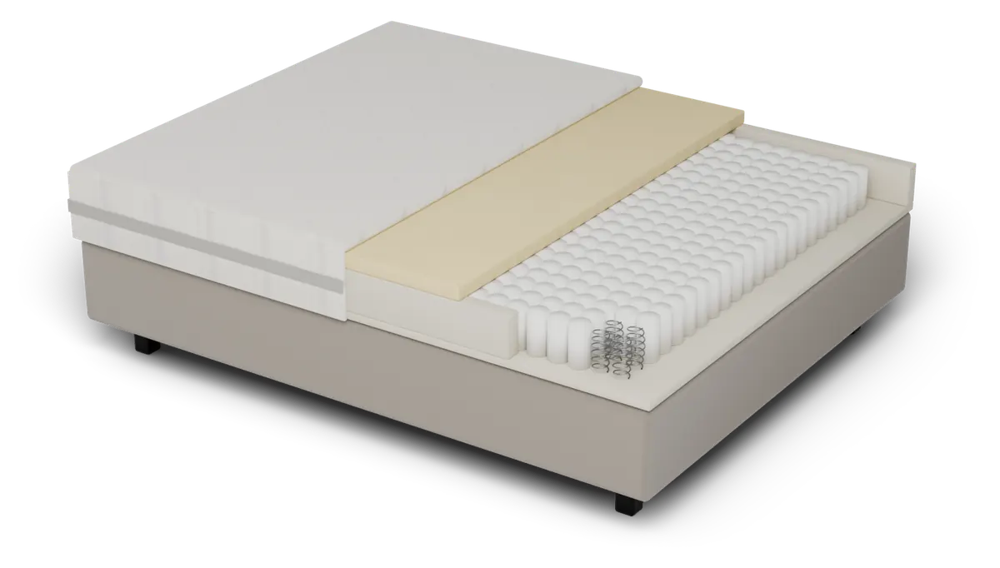

Literie
Bien choisir son matelas.
Un bon matelas est celui qui vous convient, à vous. Cinq questions pour y voir clair, avant de venir l’essayer.
Le guide
Cinq questions, cinq réponses.
Choisissez une question : la réponse s’affiche aussitôt.
01 · Ferme ou souple ?
Soutien et accueil : deux choses différentes.
Le soutien, c’est le cœur du matelas : ce qui porte le corps et garde le dos aligné. L’accueil, c’est la première sensation quand on s’allonge. On peut avoir un soutien solide avec un accueil doux. Et chaque fabricant a sa façon de dire « ferme » : seul l’essai permet de comparer.
02 · Votre position
Comment dormez-vous ?
Le corps ne s’appuie pas au même endroit selon la position.
- Sur le côté
- L’épaule et la hanche doivent pouvoir s’enfoncer un peu : un accueil plutôt souple.
- Sur le dos
- Un appui régulier, qui comble le creux des reins.
- Sur le ventre
- Un appui plus tonique, pour ne pas creuser le dos.
- Vous bougez beaucoup
- Un accueil équilibré, sur lequel on se retourne facilement.
03 · Votre gabarit
Léger ou costaud, ce n’est pas le même matelas.
Votre gabarit change la sensation d’accueil : le même matelas ne paraît pas aussi ferme à chacun. Comparez plusieurs fermetés dans votre position habituelle : le bon soutien dépend du matelas et de sa base.
04 · Le sommier
Un matelas ne se juge pas seul.
Il travaille avec son sommier ou sa base de boxspring : le même matelas ne donne pas la même sensation sur des lattes et sur une base à ressorts. Et tous les matelas ne se plient pas : si votre sommier est électrique, dites-le-nous.
Boxspring fixe ou électrique05 · À deux
Deux conforts dans un même lit.
L’un aime un lit ferme, l’autre non ? Deux matelas côte à côte permettent à chacun de choisir. On vérifie aussi, en essayant ensemble, si l’un sent l’autre bouger.
Voir les solutions à deuxÀ l’intérieur
Dans un matelas, couche par couche.
Touchez un repère de l’image pour savoir à quoi sert chaque couche.

1 · La housse
Ce que vous touchez.
Une housse matelassée, avec une bande d’aération sur le côté. Elle s’enlève et se lave.
2 · L’accueil
La première sensation.
Quelques centimètres posés sur les ressorts : mousse à froid, latex ou mousse à gel. C’est cette couche qui change la sensation quand on s’allonge.
3 · Le soutien
Le cœur du matelas.
Des ressorts ensachés : chacun est enfermé dans sa poche et réagit séparément. Ils sont répartis en sept zones, pour ne pas porter l’épaule comme le bassin.
4 · La base
Ce qui porte l’ensemble.
Un matelas travaille avec son sommier ou sa base de boxspring : le même matelas ne donne pas la même sensation sur des lattes et sur une base à ressorts.
Boxspring fixe ou électriqueVan Landschoot, Belgique
Deux matelas, plusieurs caractères.
Deux matelas belges, chacun en plusieurs versions. Sur le papier, elles se ressemblent ; allongé, pas du tout.
-
Superqueen
23 cm, à ressorts ensachés. Trois accueils : Hybride (mousse à froid), Impulse (latex) et HR Gel (mousse à gel). À essayer au magasin : Hybride et HR Gel.
-
Eclipse
21 cm. Quatre versions : une tout en mousse, trois à ressorts ensachés avec un accueil en mousse à froid, en latex ou en mousse à gel. À essayer au magasin : l’Eclipse Hybride à ressorts ensachés.
-
Lequel pour vous ?
Souple, médium ou ferme, quel accueil, quelle hauteur : cela se décide allongé, avec nous. Les versions qui ne sont pas exposées, nous vous les expliquons sur place.
Venir les essayer
La housse
Purest : une housse qui se lave.
Eclipse et Superqueen partagent la même housse, traitée Purest par le fabricant.
-
Elle s’enlève
Elle s’ouvre en deux parties et passe en machine à 60 °C.
-
Elle respire
Une bande d’aération en maille fait le tour du matelas.
-
Elle est traitée
Purest est un traitement du tissu. Le fabricant le présente comme antiallergique, antimicrobien et régulateur d’humidité. Son catalogue mentionne aussi le label Oeko-Tex.
Au magasin
Comment bien essayer.
-
01
Prenez votre position habituelle
Allongez-vous comme vous dormez, pas seulement sur le dos, et restez-y quelques minutes.
-
02
Vérifiez le creux des reins
Sur le dos, glissez la main sous vos reins. Si elle passe très facilement, le matelas est sans doute trop ferme pour vous ; si elle ne passe pas du tout, il est sans doute trop souple.
-
03
Retournez-vous
Si changer de position demande un effort, l’accueil est trop enveloppant pour vous.
-
04
Comparez, et venez à deux
Passer d’un matelas à l’autre fait sentir la différence bien mieux qu’une fiche technique. À deux, on voit tout de suite si l’un sent l’autre bouger.
Vos questions
Avant de choisir.
Faut-il choisir un matelas ferme ?
Pas forcément. Le bon matelas garde le dos aligné sans créer de point de pression : pour certains ce sera un accueil ferme, pour d’autres un accueil plus souple. L’essai le dit mieux que l’étiquette.
Ressorts, latex ou mousse : lequel est le meilleur ?
Aucun n’est meilleur pour tout le monde. Ce sont des sensations différentes : plus aérée et tonique, plus élastique, plus enveloppante. Le choix se fait allongé.
Quand faut-il changer de matelas ?
Quand un creux reste visible à votre place, quand vous sentez les ressorts ou les lattes, ou quand vous dormez mieux ailleurs que chez vous.
Peut-on garder son sommier ?
Souvent oui, s’il est en bon état et adapté au matelas choisi. Dites-nous quel sommier vous avez : nous vérifions avec vous.
Peut-on essayer les matelas au magasin ?
Oui. Plusieurs couchages sont installés au magasin : allongez-vous, sans rendez-vous, et comparez.
Les matelas sont-ils garantis ?
Oui, par la garantie d’usine de Van Landschoot. Nous vous en donnons le détail au magasin.
Quelles marques de matelas trouve-t-on chez Fony Meubles ?
Trois fabricants belges : Velda, Van Landschoot — dont les matelas Eclipse et Superqueen — et Polypreen.
Voir aussi
Continuer votre choix.
-
Boxspring fixe ou électrique
Ce qui change, et les tailles possibles.
Voir les boxsprings -
Dormir à deux
Deux conforts dans un même lit.
Voir les solutions à deux -
La chambre complète
Lits, chevets, armoires et dressings.
Voir la chambre
Venez essayer nos matelas.
Allongez-vous dans votre position habituelle : c’est le test le plus fiable. Notre équipe vous accompagne, avec ou sans rendez-vous. Parking facile d’accès.
- Lundi
- 13h30 – 18h30
- Mardi au samedi
- 10h30 – 18h30
- Dimanche
- Fermé
- Téléphone
- 064 46 07 72
- Livraison
- Par nos soins, dans le Hainaut (Binche, La Louvière, Mons, Charleroi…) et la province de Namur
Pour un projet plus loin, ailleurs en Belgique ou à l’étranger : parlons-en.